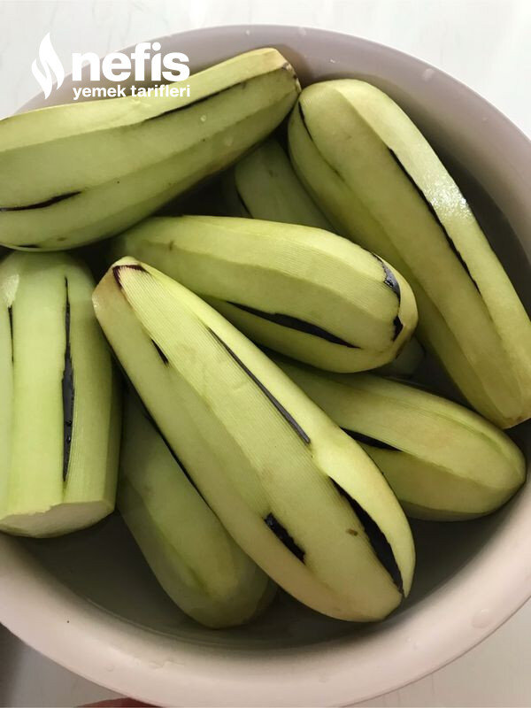

🍽️ 6-8 kişilik⏱️ Hazırlık: 15 dk🔥 Pişirme: 25 dk🏷️ Hamur İşi Tarifleri🏷️ Börek Tarifleri
Malzemeler
- 2 adet yufka
- 7-8 patlıcan
- 1 büyük soğan
- 350 gram kıyma
- 1 fincan zeytinyağı
- Tuz
- Karabiber
- Pulbiber
- Yarım bardak süt
- Yarım fincan sıvı yağ
- Sıvıyağ (İstenirse susam, çörekotu)
Hazırlanışı
- Önce kıyma ve soğanı iyice kavuruyoruz.
- Tuz, karabiber, pulbiber ekleyip karıştırıyoruz.
- İstenirse maydanoz ekleyip soğumaya bırakıyoruz.
- Patlıcanların kabuklarını soyuyoruz.
- Tuzlu suda biraz bekletiyoruz.
- Patlıcanların suyunu sıkıp tuz ve baharatlarla tatlandırıyoruz.
- Fırın kağıdı serilmiş tepsiye üzerlerini fırça ile yağlıyoruz.
- Önceden ısıttığımıız fırında kızartıyoruz.
- Sos malzemelerini hazırlıyoruz;Yufkayı tezgaha seriyoruz.
- Üzerine kaşıkla veya fırçayla sosu sürüyoruz.
- Kızarmış patlıcanların yarısını aralıklı yufkanın üzerine diziyoruz.
- Üzerine kıymalı karışımın yarısını serpiyoruz.
- Diğer yufkayı üzerine seriyoruz.
- Aynı işlemleri tekrarlıyoruz.
- Yufkanın kenarlarını katlayarak kare şekline getiriyoruz.
- Rulo şeklinde sarıyoruz.
- Dilimleyip tepsiye diziyoruz.
- Üzerini fırçayla yağlıyoruz.
- Önceden ısıttığımız 180 derece fırında kızarasıya kadar pişiriyoruz.